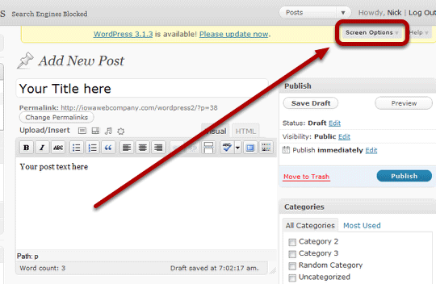
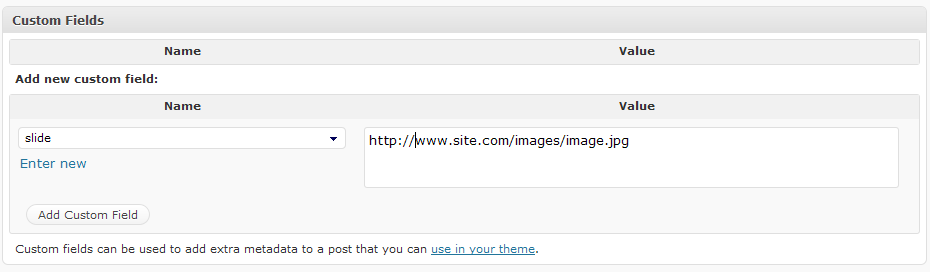
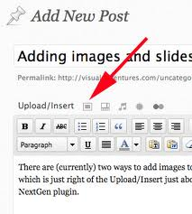
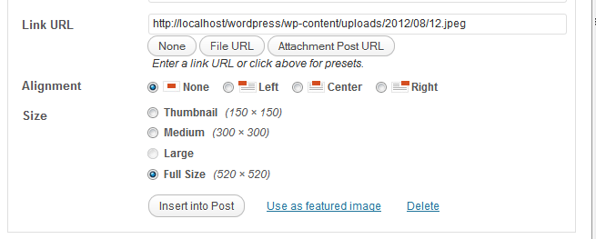

Note: This is universal guide for all our themes that covers all the
settings (even if this theme doesn't have some). You don't have to read
everything if theme doesn't supports everything. For example,
we are writing here about 2 ways of setting up slider, and you need to know
only one, noted in theme options. If you have any problems, please consult
first this readme, instructions from theme options, FAQ on our site, theme
comments on our site, or feel free to post a comment.
Enjoy reading, and wish you luck with your project!
Many of our themes come with logo image instead of text. In order to change logo image, you only need edit original logo image from theme/images folder. There is also a psd for logo (Photoshop file, can be opened with Gimp too), that you can edit to keep the original look of the logo. In themes folder, you'll see logo folder. Inside you'll find logo.zip. Extract it.
You'll also see font file that is used for logo, so first - install font (for Win users double click to open file, and click Install).
Now open up logo.psd in Photoshop. Click "T" button on the left toolbar (this is button for editing text), and click on the text of the logo. Now, just delete text, and type your own - site name, or whatever.
The last step is to save it. Click File / Save for web & devices, and on the right side - you'll see extension type (gif, jpg, png-8, png-24, and bmp). Choose png-24. Now click save and and name it logo.
You can save logo anywhere you want, but you still have to replace original logo.png that's located in site_folder/wp-content/themes/theme/images/ folder. If you're working in localhost this is possible, but if you're not - you need to upload it to your server on this path. That's it!
There are two parts of setting up slider, the first one is in Theme Options, and the second one is - setting up the images.
The second part is setting up the images. This is for many people tricky part. There are two ways of setting up the images, first one is with custom fields (the most often on our themes), and the second one - more simpler, but limitating - using featured images.
First thing here is to open post from selected sliding category (the one from first part). Next, you need to enable custom fields. At the top right corner of your dashboard - you'll see screen options. Check the image bellow:
Now click here and options will show up. Click to enable custom fields.
Custom fields will now appear under your editor.
Next step is to upload image that you want in the slider (the same way you upload images to posts). So, click on the uploading button "Upload / Insert" (check the image).
Drag your file on the uploader, and once the image is uploaded you'll see additional options there.
Now you see Link Url. Now make sure that your link is good for example - http://www.your-site.com/wp-content/uploads/2012/08/12.jpeg and not like http://www.your-site.com/?attachment_id=1153. If Wordpress show's you ?attachment_id= at the end of url - that won't work for the slider. Just click on File URL button under Link URL and you'll get a proper link. Now copy the link, and close the popup (no need to save anything).
Go to the custom fields - and on the right side under the "Value" paste image link. On the left side - under "Name" type slide and click Add custom field button.
That's it! You may skip the next part if slider is working.
First thing here is to open post from selected sliding category (the one from first part). In the right column you'll see "Featured Image".
Click on Set featured image, and image uploader will show up. Drag your image there, and click "Use as Featured Image" (image bellow).
Now just click update or publish post, and that's it.
If theme has built in gallery slider like jcarousel, where only images and post titles are shown - you set it up the same way as content slider, with one difference. The difference is in "Name" in custom fields, you type thumbnail and not "slide". Of course, gallery sometime's uses featured images, so you don't have to do anything, except to enable it and select sliding category and number of slides.
This theme is made by Simplewpthemes.com.